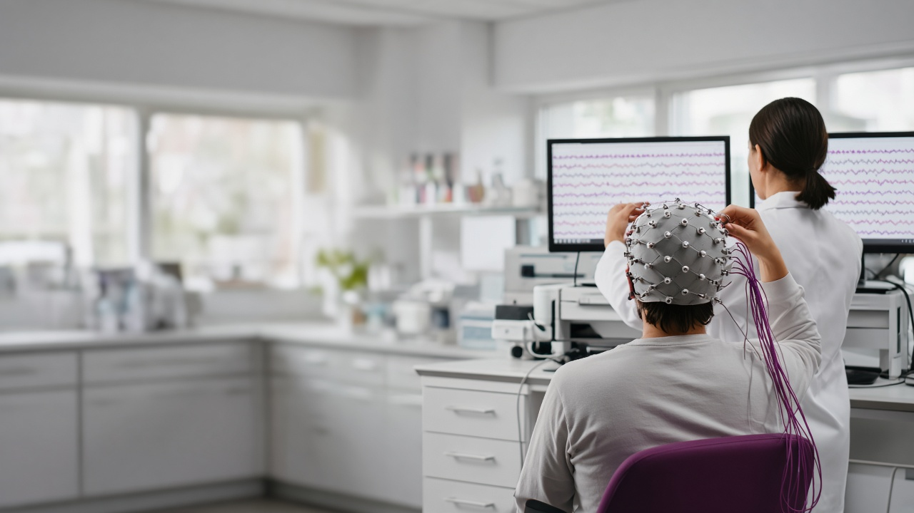

ВРЕМЕННАЯ ИЛЛЮСТРАЦИЯ · НЕ ПУБЛИКОВАТЬЗаменить на фото: ЭЭГ-исследование в лаборатории НИИПрикладные нейроисследования: от гипотезы — к прототипу
Исследования и разработки на базе СамГМУ.
С какими задачами к нам приходят
Это для вас, если нужно проверить идею измерениями, а не мнениями, — и довести её до прототипа.
Нужны нейрофизиологические данные для разработки цифрового медицинского решения
Протокол, конечные точки, исследовательские данные.
Нужны объективные показатели в исследовании реабилитационной методики
Анализ движений, VR-среда, биосигналы.
Нужен нейрокогнитивный модуль в исследовании
ЭЭГ, айтрекинг, когнитивные пробы.
Нужно управлять устройством по биосигналам
Интерфейсы мозг — компьютер, сенсорная обратная связь.
Нужно понять реакцию пользователей на интерфейс или рекламу
ЭЭГ, биометрия, айтрекинг — три источника данных.
Нужно проверить гипотезу до вложений в разработку
Научная проработка и эксперимент до прототипа.
Узнали свою задачу? Опишите её своими словами — предложим, как проверить.
Обсудить задачуНаправления прикладных исследований
От нейрофизиологической оценки до исследований поведения потребителей — полным циклом, от гипотезы до прототипа.
 ВРЕМЕННАЯ ИЛЛЮСТРАЦИЯЗаменить на фото лаборатории
ВРЕМЕННАЯ ИЛЛЮСТРАЦИЯЗаменить на фото лабораторииНейродиагностика и мониторинг
Исследование функционального состояния нервной системы: ЭЭГ, айтрекинг, биосигналы, когнитивный скрининг, мониторинг сна.
Подробнее ВРЕМЕННАЯ ИЛЛЮСТРАЦИЯЗаменить на фото лаборатории
ВРЕМЕННАЯ ИЛЛЮСТРАЦИЯЗаменить на фото лабораторииРеабилитация
Технологии и объективная оценка для реабилитации: анализ движений, VR-среда, биологическая обратная связь, нейроинтерфейсы.
Подробнее ВРЕМЕННАЯ ИЛЛЮСТРАЦИЯЗаменить на фото лаборатории
ВРЕМЕННАЯ ИЛЛЮСТРАЦИЯЗаменить на фото лабораторииНейромаркетинг
Как люди реагируют на рекламу, упаковку, сайт и сервис: ЭЭГ, биометрия, айтрекинг — три источника данных.
ПодробнееПолный цикл — от гипотезы до прототипа
Можно зайти на любом этапе: с идеей, с данными или с готовым решением, которое нужно проверить.
Гипотеза
Формулируем вопрос заказчика как проверяемую гипотезу.
Научная проработка идеи
Обзор методов и данных, дизайн исследования.
Экспериментальная проверка гипотез
Измерения в лаборатории: ЭЭГ, айтрекинг, биосигналы.
Разработка прототипа
Макет устройства, ПО или методики по результатам проверки.
Флагманские проекты
Три проекта — по одному из каждого направления. Остальные — на странице «Все проекты».
(генеративные изображения запрещены)
Разрабатываемая система для регулярного скрининга и мониторинга когнитивного состояния людей 60 лет и старше и подбора когнитивных тренировок. Диагноз не ставит: результаты интерпретирует специалист.
Подробнее«Нейро-зеркало»
Разрабатываемая система для регулярного скрининга и мониторинга когнитивного состояния людей 60 лет и старше и подбора когнитивных тренировок. Диагноз не ставит: результаты интерпретирует специалист.
Оценка подвижности суставов конечностей по видео с обычной веб-камеры: компьютерное зрение измеряет углы и амплитуду движений при стандартизированных упражнениях и показывает динамику восстановления. Исследовательский прототип.
ПодробнееCROATLE
Оценка подвижности суставов конечностей по видео с обычной веб-камеры: компьютерное зрение измеряет углы и амплитуду движений при стандартизированных упражнениях и показывает динамику восстановления. Исследовательский прототип.
(без логотипов заказчика)
Как потенциальные клиенты банка реагируют на этапы оформления услуги на сайте — и где путь можно упростить. Айтрекинг, ЭЭГ, биометрия, интервью.
ПодробнееНейроисследование пользовательского пути
Как потенциальные клиенты банка реагируют на этапы оформления услуги на сайте — и где путь можно упростить.
История
НИИ нейронаук СамГМУ создан 1 февраля 2021 года приказом ректора № 25 от 28.01.2021 на основании решения Учёного совета университета от 27.11.2020. Институт сформирован как ответ на глобальные вызовы в области нейронаук, медицины и цифровых технологий.
Научная деятельность охватывает фундаментальные, прикладные и трансляционные исследования: от принципов работы нервной системы до нейротехнологий для медицины и инженерных систем.
Только в макете. Источник: официальная страница НИИ нейронаук на samsmu.ru
Четыре научные лаборатории
Направления, методы исследования и руководители лабораторий.
- Математического нейромоделирования
- Нейроинтерфейсов и нейротехнологий
- Трансляционных исследований и персонализированной медицины
- Нейроморфных систем
Команда НИИ
Нейрофизиологи, врачи, инженеры и аналитики данных ведут исследование от протокола до прототипа.

Жизнь НИИ нейронаук
Публикации, события и результаты исследований.
Краткая суть новости — аннотация из CMS, до 250 знаков: что произошло и почему это важно. Плейсхолдер, не публиковать.
Читать новость →Заголовок новости — плейсхолдер, не публиковать
Краткая суть новости — аннотация из CMS, до 250 знаков: что произошло и почему это важно. Плейсхолдер, не публиковать.
Длинная аннотация для проверки: текст на обложке обрезается на пятой строке многоточием, чтобы панель не вылезала за кадр 16:9, даже если редактор заполнил поле на максимум в двести пятьдесят знаков. Плейсхолдер.
Читать новость →Заголовок новости в две строки — проверка длинного заголовка на карточке
Длинная аннотация для проверки: текст на обложке обрезается на пятой строке многоточием, чтобы панель не вылезала за кадр 16:9, даже если редактор заполнил поле на максимум в двести пятьдесят знаков. Плейсхолдер.
Короткая аннотация — одна строка. Плейсхолдер.
Читать новость →Заголовок новости — плейсхолдер
Короткая аннотация — одна строка. Плейсхолдер.
Мы в каналах
Короткие новости, видео с исследований и подкасты.
Обсудить исследование
Опишите задачу своими словами — мы предложим, как её проверить.
Спасибо, заявка отправлена
Ответим на указанный e-mail в течение [срок — решение руководителя].